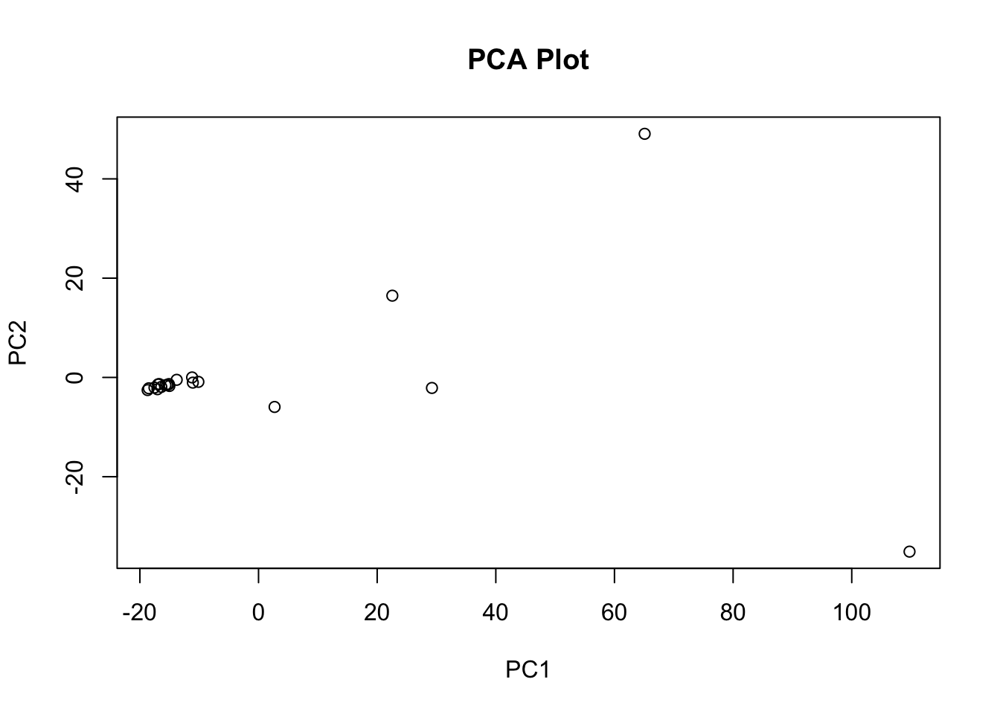
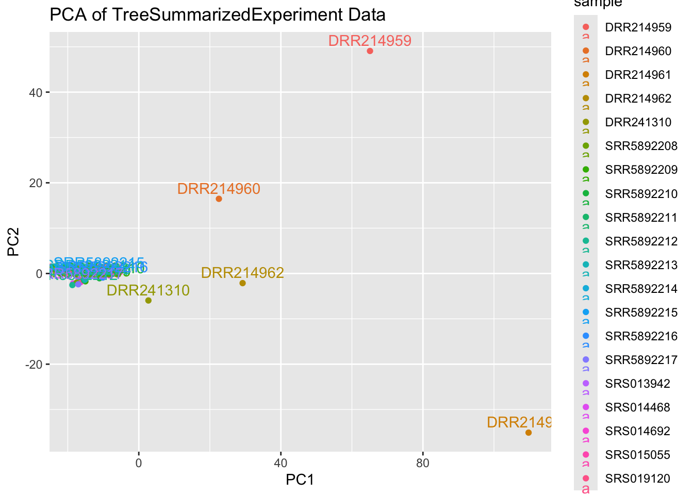
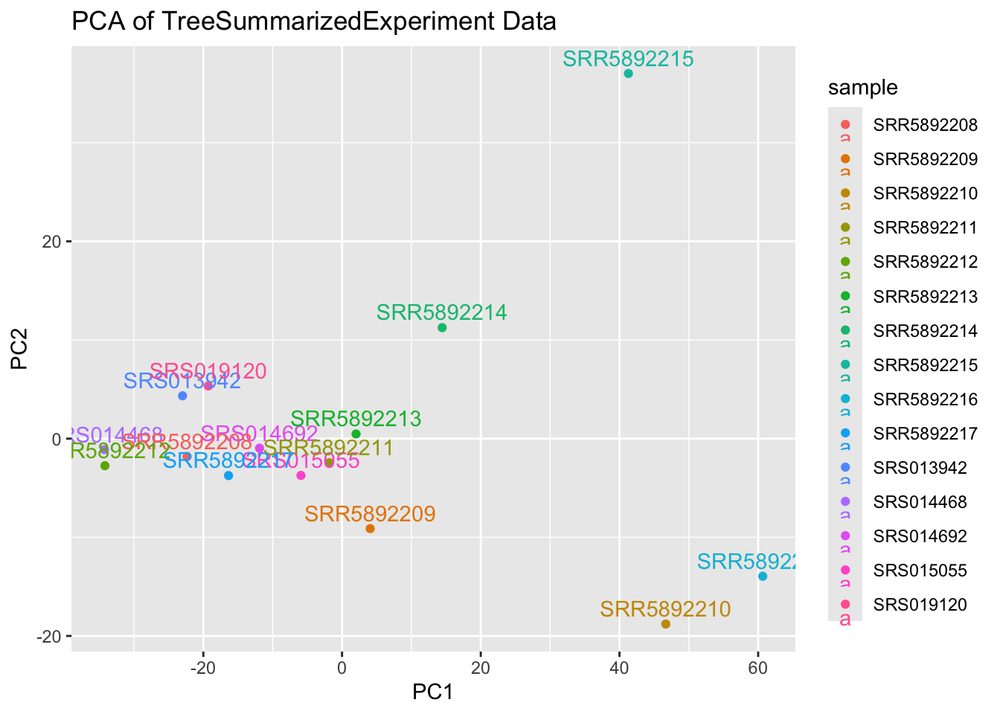

# Make sure these are all installed as packages first
# Load necessary libraries
library(readxl)
library(pheatmap)
library(dplyr)
library(tidyr)
library(tibble)
library(RColorBrewer)
library(miaViz)
library(scater)
library(mia)
library(TreeSummarizedExperiment)
library(here)
library(readr)
library(phyloseq)
library(DESeq2)
library(ggrepel)
library(gridExtra)
library(vegan)Healthy Global Dataset Metagenomics: Short-read taxonomic based metagenomic analysis of healthy human saliva samples in R
1. Getting Started in R
1.1 Installing and Loading Packages
Install all necessary packages into R.
2. Import and Clean Data
We will be importing MetaPhlan style Bracken data
First we’ll write a function to import MetaPhlan style bracken data
2.2 Load taxonomic data
file_path = "../data/noma_HMP_saliva_bracken_MetaPhlan_style_report_bacteria_20_health_controls_only.txt"
# Import data
tse_metaphlan_healthy = loadFromMetaphlan(file_path)
# Defining the TSE for the rest of the script
tse_metaphlan = tse_metaphlan_healthy
# Use makePhyloseqFromTreeSE from Miaverse
phyloseq_metaphlan = makePhyloseqFromTreeSE(tse_metaphlan)2.2 Add metadata
# Define the function to update metadata
update_sample_metadata = function(tse_object) {
# Extract sample names (column names)
sample_names = colnames(tse_object)
# Create the "accession" column based on sample name prefix
accession = ifelse(grepl("^SRS", sample_names), "SRS",
ifelse(grepl("^SRR", sample_names), "SRR",
ifelse(grepl("^DRR", sample_names), "DRR", NA)))
# Create the "location" column based on sample name prefix
location = ifelse(grepl("^SRS", sample_names), "USA",
ifelse(grepl("^SRR", sample_names), "Denmark",
ifelse(grepl("^DRR", sample_names), "Japan", NA)))
# Create a DataFrame with the new metadata columns
sample_metadata = DataFrame(accession = accession, location = location)
rownames(sample_metadata) = sample_names
# Add the metadata as colData to the TreeSummarizedExperiment object
colData(tse_object) = sample_metadata
# Return the updated object
return(tse_object)
}
# Example usage:
tse_metaphlan = update_sample_metadata(tse_metaphlan)
tse_metaphlan_genus = altExp(tse_metaphlan, "Genus")
tse_metaphlan_genus = update_sample_metadata(tse_metaphlan_genus)
head(as.data.frame(colData(tse_metaphlan))) accession location
SRS013942 SRS USA
SRS014468 SRS USA
SRS014692 SRS USA
SRS015055 SRS USA
SRS019120 SRS USA
SRR5892208 SRR Denmarkhead(as.data.frame(colData(tse_metaphlan_genus))) accession location
SRS013942 SRS USA
SRS014468 SRS USA
SRS014692 SRS USA
SRS015055 SRS USA
SRS019120 SRS USA
SRR5892208 SRR Denmark2.3 Inspecting the Data
3. Non-parametric statistical tests
3.1 Preparing the data
# See above "Converting TSE to other common data formats e.g. Phyloseq"
# Use makePhyloseqFromTreeSE from Miaverse
tse_metaphlan_healthy = tse_metaphlan
tse_metaphlan_healthy_genus = tse_metaphlan_genus
# make an assay for abundance
tse_metaphlan_healthy = transformAssay(tse_metaphlan_healthy, assay.type="counts", method="relabundance")
taxonomyRanks(tse_metaphlan_healthy)[1] "Kingdom" "Phylum" "Class" "Order" "Family" "Genus" "Species"# Check that colData was added successfully
colData(tse_metaphlan_healthy_genus)DataFrame with 20 rows and 2 columns
accession location
<character> <character>
SRS013942 SRS USA
SRS014468 SRS USA
SRS014692 SRS USA
SRS015055 SRS USA
SRS019120 SRS USA
... ... ...
DRR214959 DRR Japan
DRR214960 DRR Japan
DRR214961 DRR Japan
DRR214962 DRR Japan
DRR241310 DRR Japanmetadata_df = colData(tse_metaphlan_healthy_genus)
metadata_healthy_genus = as.data.frame(colData(tse_metaphlan_healthy_genus))
metadata_healthy_genus accession location
SRS013942 SRS USA
SRS014468 SRS USA
SRS014692 SRS USA
SRS015055 SRS USA
SRS019120 SRS USA
SRR5892208 SRR Denmark
SRR5892209 SRR Denmark
SRR5892210 SRR Denmark
SRR5892211 SRR Denmark
SRR5892212 SRR Denmark
SRR5892213 SRR Denmark
SRR5892214 SRR Denmark
SRR5892215 SRR Denmark
SRR5892216 SRR Denmark
SRR5892217 SRR Denmark
DRR214959 DRR Japan
DRR214960 DRR Japan
DRR214961 DRR Japan
DRR214962 DRR Japan
DRR241310 DRR Japan# species
phyloseq_healthy = makePhyloseqFromTreeSE(tse_metaphlan_healthy)
# genus
phyloseq_healthy = makePhyloseqFromTreeSE(tse_metaphlan_genus)
phyloseq_healthy_esd = transform_sample_counts(phyloseq_healthy, function(x) 1E6 * x/sum(x))
ntaxa(phyloseq_healthy_esd) [1] 1757nsamples(phyloseq_healthy_esd) [1] 203.1 Permanova across entire dataset
library(vegan)
set.seed(123456)
# Calculate bray curtis distance matrix on main variables
olp.bray = phyloseq::distance(phyloseq_healthy_esd, method = "bray")
sample.olp.df = data.frame(sample_data(phyloseq_healthy_esd))
permanova_all = vegan::adonis2(olp.bray ~ accession , data = sample.olp.df)
permanova_allPermutation test for adonis under reduced model
Permutation: free
Number of permutations: 999
vegan::adonis2(formula = olp.bray ~ accession, data = sample.olp.df)
Df SumOfSqs R2 F Pr(>F)
Model 2 0.64828 0.48414 7.9774 0.001 ***
Residual 17 0.69075 0.51586
Total 19 1.33903 1.00000
---
Signif. codes: 0 '***' 0.001 '**' 0.01 '*' 0.05 '.' 0.1 ' ' 1Next we will test the beta dispersion
# All together now
vegan::adonis2(olp.bray ~ accession, data = sample.olp.df)Permutation test for adonis under reduced model
Permutation: free
Number of permutations: 999
vegan::adonis2(formula = olp.bray ~ accession, data = sample.olp.df)
Df SumOfSqs R2 F Pr(>F)
Model 2 0.64828 0.48414 7.9774 0.001 ***
Residual 17 0.69075 0.51586
Total 19 1.33903 1.00000
---
Signif. codes: 0 '***' 0.001 '**' 0.01 '*' 0.05 '.' 0.1 ' ' 1beta = betadisper(olp.bray, sample.olp.df$accession)Warning in betadisper(olp.bray, sample.olp.df$accession): some squared
distances are negative and changed to zeropermutest(beta)
Permutation test for homogeneity of multivariate dispersions
Permutation: free
Number of permutations: 999
Response: Distances
Df Sum Sq Mean Sq F N.Perm Pr(>F)
Groups 2 0.006237 0.0031184 0.3448 999 0.708
Residuals 17 0.153764 0.0090449 # we don't want this to be significant 3.2 Anosim across entire dataset
condition_group = get_variable(phyloseq_healthy_esd, "accession")
set.seed (123456)
anosim(distance(phyloseq_healthy_esd, "bray"), condition_group)
Call:
anosim(x = distance(phyloseq_healthy_esd, "bray"), grouping = condition_group)
Dissimilarity: bray
ANOSIM statistic R: 0.681
Significance: 0.001
Permutation: free
Number of permutations: 999condition_ano = anosim(distance(phyloseq_healthy_esd, "bray"), condition_group)
condition_ano
Call:
anosim(x = distance(phyloseq_healthy_esd, "bray"), grouping = condition_group)
Dissimilarity: bray
ANOSIM statistic R: 0.681
Significance: 0.001
Permutation: free
Number of permutations: 9993.3 MRPP across entire dataset
#condition
olp.bray = phyloseq::distance(phyloseq_healthy_esd, method = "bray") # Calculate bray curtis distance matrix
condition_group = get_variable(phyloseq_healthy_esd, "accession") # Make condition Grouping
# Run MRPP
set.seed(123456)
vegan::mrpp(olp.bray, condition_group, permutations = 999,
weight.type = 1, strata = NULL, parallel = getOption("mc.cores"))
Call:
vegan::mrpp(dat = olp.bray, grouping = condition_group, permutations = 999, weight.type = 1, strata = NULL, parallel = getOption("mc.cores"))
Dissimilarity index: bray
Weights for groups: n
Class means and counts:
DRR SRR SRS
delta 0.2508 0.2399 0.3368
n 5 10 5
Chance corrected within-group agreement A: 0.2447
Based on observed delta 0.2669 and expected delta 0.3533
Significance of delta: 0.001
Permutation: free
Number of permutations: 9993.4 Permanova function for specific taxa
# Extract the counts and taxonomic table
counts = assay(tse_metaphlan_genus, "counts")
tax_table = rowData(tse_metaphlan_genus)$Genus # Replace "Genus" with your taxonomic level of interest
sample_data = colData(tse_metaphlan_genus)
groups = as.data.frame(sample_data)
# Aggregate counts by Genus
aggregated_counts = rowsum(counts, tax_table)
# Create a new aggregated TreeSummarizedExperiment object
tse_aggregated = TreeSummarizedExperiment(assays = list(counts = aggregated_counts),
colData = sample_data)
# Calculate relative abundances
relative_abundances = sweep(assay(tse_aggregated, "counts"), 2, colSums(assay(tse_aggregated, "counts")), FUN = "/") * 100
# Convert to a data frame and group by Treatment
relative_df = as.data.frame(t(relative_abundances))
set.seed (123456)
# Define the vector of genera names (without the "g__" prefix)
genera = c("Prevotella", "Treponema", "Neisseria", "Bacteroides",
"Filifactor", "Porphyromonas", "Fusobacterium", "Escherichia",
"Selenomonas", "Aggregatibacter", "Capnocytophaga",
"Streptococcus", "Actinomyces", "Campylobacter", "Dialister", "Gemella",
"Haemophilus", "Leptotrichia", "Rothia", "Schaalia", "Tannerella", "Veillonella")
# Initialize an empty data frame to store the results
permanova_taxa_results = data.frame(Genus = character(), pvalue = numeric(), stringsAsFactors = FALSE)
# Loop over each genus
for (genus in genera) {
set.seed (123456)
# Subset the data for the genus; adjust column selection as needed
subset_data = relative_df %>% select(paste0("g__", genus))
# Calculate the Bray-Curtis distance
bray_dist = vegdist(subset_data, method = "bray")
# Run PERMANOVA using adonis2
adonis_result = adonis2(bray_dist ~ accession, data = groups)
# Extract the p-value for the sample_type factor (usually in the first row)
pval = adonis_result$`Pr(>F)`[1]
# Append the result to the results data frame
permanova_taxa_results = rbind(permanova_taxa_results, data.frame(Genus = genus, pvalue = pval))
}
print(permanova_taxa_results) Genus pvalue
1 Prevotella 0.070
2 Treponema 0.001
3 Neisseria 0.085
4 Bacteroides 0.019
5 Filifactor 0.081
6 Porphyromonas 0.004
7 Fusobacterium 0.001
8 Escherichia 0.115
9 Selenomonas 0.533
10 Aggregatibacter 0.001
11 Capnocytophaga 0.002
12 Streptococcus 0.001
13 Actinomyces 0.002
14 Campylobacter 0.001
15 Dialister 0.001
16 Gemella 0.283
17 Haemophilus 0.001
18 Leptotrichia 0.497
19 Rothia 0.001
20 Schaalia 0.001
21 Tannerella 0.060
22 Veillonella 0.002ptr = print(permanova_taxa_results) Genus pvalue
1 Prevotella 0.070
2 Treponema 0.001
3 Neisseria 0.085
4 Bacteroides 0.019
5 Filifactor 0.081
6 Porphyromonas 0.004
7 Fusobacterium 0.001
8 Escherichia 0.115
9 Selenomonas 0.533
10 Aggregatibacter 0.001
11 Capnocytophaga 0.002
12 Streptococcus 0.001
13 Actinomyces 0.002
14 Campylobacter 0.001
15 Dialister 0.001
16 Gemella 0.283
17 Haemophilus 0.001
18 Leptotrichia 0.497
19 Rothia 0.001
20 Schaalia 0.001
21 Tannerella 0.060
22 Veillonella 0.0024. Principal Components analysis
4.1 PCA with prcomp
# Assume `tse` is your TreeSummarizedExperiment object
# Extract the assay data (e.g., expression matrix)
expr_data = assay(tse_metaphlan_genus)
colnames(tse_metaphlan) [1] "SRS013942" "SRS014468" "SRS014692" "SRS015055" "SRS019120"
[6] "SRR5892208" "SRR5892209" "SRR5892210" "SRR5892211" "SRR5892212"
[11] "SRR5892213" "SRR5892214" "SRR5892215" "SRR5892216" "SRR5892217"
[16] "DRR214959" "DRR214960" "DRR214961" "DRR214962" "DRR241310" expr_data_df = as.data.frame(expr_data)
ncol(expr_data_df)[1] 20t_expr_data_df = t(expr_data_df)
# Identify constant columns (zero variance)
zero_var_cols = apply(t_expr_data_df, 2, function(col) var(col) == 0)
# Display columns with zero variance
names(t_expr_data_df)[zero_var_cols]NULL# Remove constant columns
t_expr_data_df_filtered = t_expr_data_df[, !zero_var_cols]
colnames(t_expr_data_df_filtered) = gsub(".*(g__*)", "\\1", colnames(t_expr_data_df_filtered))
# Optionally scale and center the data (depends on your data)
#expr_data_scaled = scale(t_expr_data_df)
# Run PCA using the prcomp function
pca_result = prcomp(t_expr_data_df_filtered, center = TRUE, scale. = TRUE)
# View the summary of the PCA result
summary(pca_result)Importance of components:
PC1 PC2 PC3 PC4 PC5 PC6 PC7
Standard deviation 33.4472 14.4946 9.08689 7.35815 6.88639 5.95437 5.1038
Proportion of Variance 0.6573 0.1234 0.04851 0.03181 0.02786 0.02083 0.0153
Cumulative Proportion 0.6573 0.7807 0.82925 0.86106 0.88892 0.90975 0.9251
PC8 PC9 PC10 PC11 PC12 PC13 PC14
Standard deviation 4.4433 4.15710 3.79462 3.54310 3.48885 3.2999 3.20788
Proportion of Variance 0.0116 0.01015 0.00846 0.00738 0.00715 0.0064 0.00605
Cumulative Proportion 0.9367 0.94681 0.95527 0.96265 0.96980 0.9762 0.98224
PC15 PC16 PC17 PC18 PC19 PC20
Standard deviation 2.95908 2.57030 2.32659 2.19166 2.15529 9.14e-14
Proportion of Variance 0.00514 0.00388 0.00318 0.00282 0.00273 0.00e+00
Cumulative Proportion 0.98739 0.99127 0.99445 0.99727 1.00000 1.00e+00#dev.off()4.2 plot PCA with base R
# Plot the PCA results (e.g., using ggplot2 or base R plotting)
plot(pca_result$x[,1], pca_result$x[,2],
xlab = "PC1", ylab = "PC2", main = "PCA Plot")
4.3 plot PCA with ggplot
# Optionally, visualize PCA with ggplot2 for more customized plotting
library(ggplot2)
pca_df = as.data.frame(pca_result$x)
pca_df$sample = rownames(pca_result$x)
pca_df$sample2 = colnames(expr_data)
ggplot(pca_df, aes(x = PC1, y = PC2, label = sample, col = sample)) +
geom_point() +
geom_text(vjust = -0.5) +
ggtitle("PCA of TreeSummarizedExperiment Data")
4.3 plot PCA without DRR accessions
Now we will remove the DRR accession
drops = c("DRR214959", "DRR214960", "DRR214961", "DRR214962", "DRR241310")
expr_data_df = expr_data_df[ , !(names(expr_data_df) %in% drops)]
ncol(expr_data_df)[1] 15t_expr_data_df = t(expr_data_df)
# Identify constant columns (zero variance)
zero_var_cols = apply(t_expr_data_df, 2, function(col) var(col) == 0)
# Display columns with zero variance
names(t_expr_data_df)[zero_var_cols]NULL# Remove constant columns
t_expr_data_df_filtered = t_expr_data_df[, !zero_var_cols]
colnames(t_expr_data_df_filtered) = gsub(".*(g__*)", "\\1", colnames(t_expr_data_df_filtered))
# Run PCA using the prcomp function
pca_result = prcomp(t_expr_data_df_filtered, center = TRUE, scale. = TRUE)
#dev.off()
# Optionally, visualize PCA with ggplot2 for more customized plotting
library(ggplot2)
pca_df = as.data.frame(pca_result$x)
pca_df$sample = rownames(pca_result$x)
ggplot(pca_df, aes(x = PC1, y = PC2, label = sample, col = sample)) +
geom_point() +
geom_text(vjust = -0.5) +
ggtitle("PCA of TreeSummarizedExperiment Data")